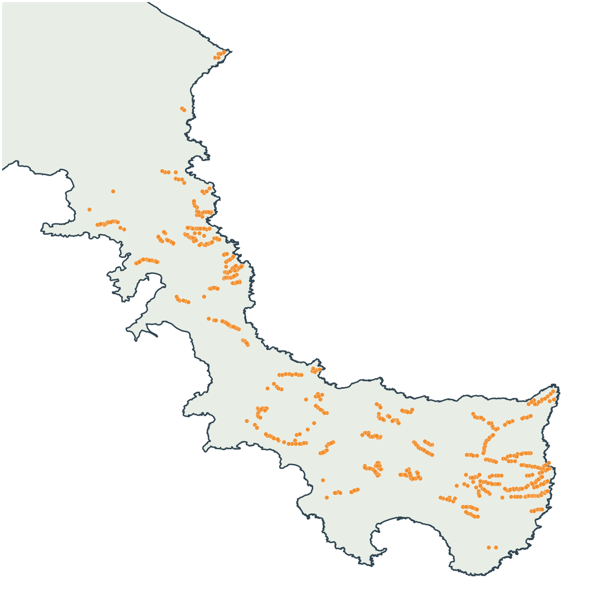
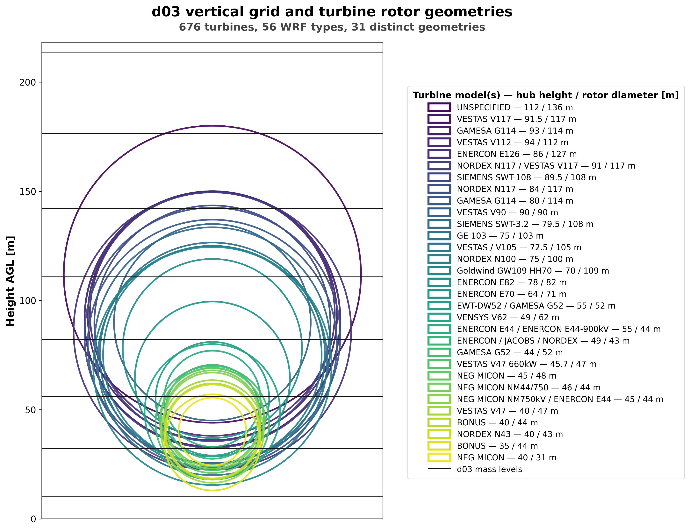

Turbine inventory
The WF-existing simulation represents 676 existing turbines in southern Evia. Inventory information is used to assign the WRF turbine types and their hub-height and rotor-diameter characteristics.
Geographical inventory

Rotor geometries and vertical grid
The inventory contains 56 WRF turbine types and 31 distinct combinations of hub height and rotor diameter. The figure places the rotor envelopes against the d03 mass levels used by the model.
